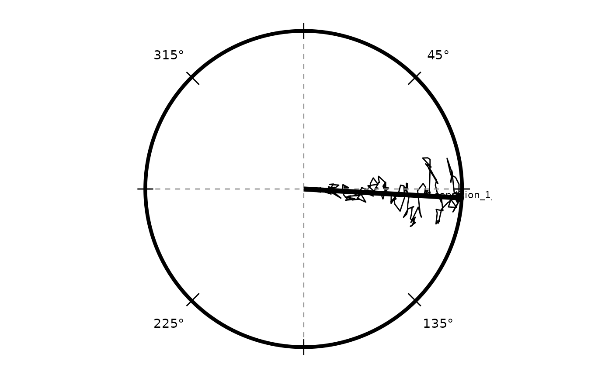

radiate.RdAccepts either a precomputed data frame of polar/cartesian coordinates or a `TrajSet`. When a `TrajSet` is supplied, column mappings are inferred from the object and handed off to the plotting helpers.
radiate(
data,
x_col = "rel_x",
y_col = "rel_y",
geom = "path",
group_col = NULL,
colour_col = NULL,
colour_cycle = NULL,
panel_by = NULL,
ncol = NULL,
strip_labels = NULL,
strip_position = c("top", "bottom", "left", "right", "inside"),
strip_label_size = 11,
ticks = NULL,
degrees = NULL,
legend = NULL,
title = NULL,
xlab = NULL,
ylab = NULL,
axes = NULL,
style = c("classic", "minimal"),
show_labels = NULL,
label_col = NULL,
label_size = 3,
label_padding = 1.08,
label_use_repel = TRUE,
show_arrow = NULL,
arrow_angle_col = NULL,
arrow_colour = "black",
arrow_size = 2,
...
)Data frame or `TrajSet`.
Name of the column mapped to the x aesthetic.
Name of the column mapped to the y aesthetic.
Geom specification passed to [draw_tracks()].
Optional column for grouping aesthetics.
Optional column for colour aesthetics. Mutually exclusive with `colour_cycle`.
Optional cycling colour specification. Either a positive integer `n` (trajectories are assigned colours 1–n, cycling back to 1 after every `n` trajectories) or a character vector of colour values (e.g. `c("red","blue","green")`). When `panel_by` is set the cycle restarts independently within each panel. Mutually exclusive with `colour_col`.
NULL, a column name, or a character vector of column names to facet by (via [ggplot2::facet_wrap()]). The named column(s) must be present in the data.
Number of columns passed to [ggplot2::facet_wrap()] when `panel_by` is set.
Logical or `NULL`. Whether to show a label identifying the panel variable value on each panel. Defaults to `TRUE` when `panel_by` is set, `FALSE` otherwise. Ignored when `panel_by` is `NULL`.
Position of the panel label. One of `"top"` (default), `"bottom"`, `"left"`, `"right"` (ggplot2 strip positions), or `"inside"` (places a text annotation inside the plot area, centred below the unit circle at y = −1.25).
Font size for strip labels. Applies to both strip text and the in-panel `"inside"` annotation.
Additional styling options.
Either `"classic"` (default) or `"minimal"`.
Whether to place labels at the perimeter.
Column containing label values.
Multiplier applied to the unit circle when placing labels.
Use `ggrepel::geom_text_repel()` when available.
Whether to draw a mean resultant arrow from the centre.
Column containing angles (radians) to summarise for the arrow.
Arrow colour.
Arrow linewidth.
Additional arguments forwarded to [draw_tracks()].
A `ggplot2` object.
tracks_demo <- simulate_tracks(conditions = data.frame(n_trials = 1L),
n_points = 200, seed = 1)
#> Warning: an object is coerced to the class 'circular' using default value for the following components:
#> type: 'angles'
#> units: 'radians'
#> template: 'none'
#> modulo: 'asis'
#> zero: 0
#> rotation: 'counter'
#> conversion.circularmuradians0counter
radiate(tracks_demo, x_col = "rel_x", y_col = "rel_y", group_col = "trial_id")
#> Warning: an object is coerced to the class 'circular' using default value for the following components:
#> type: 'angles'
#> units: 'radians'
#> template: 'none'
#> modulo: 'asis'
#> zero: 0
#> rotation: 'counter'
#> conversion.circularxradians
#> Warning: an object is coerced to the class 'circular' using default value for the following components:
#> type: 'angles'
#> units: 'radians'
#> template: 'none'
#> modulo: 'asis'
#> zero: 0
#> rotation: 'counter'
#> conversion.circularxradians
